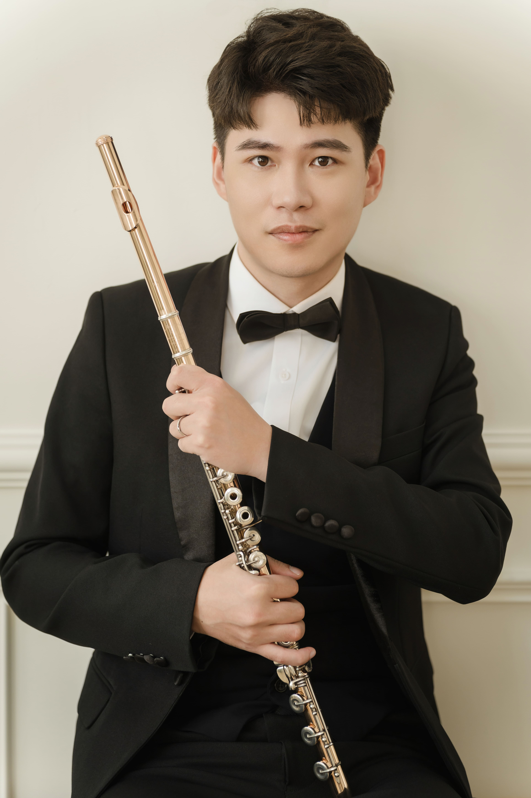

長笛演奏家 · 最高演奏文憑 Konzertexamen
Tsai Jian-Wei
德國國立特羅辛根高等音樂院
最高演奏文憑（Konzertexamen）畢業
現旅居台灣，從事演奏與教學

關於我
蔡建緯旅居德國近七年，就讀於德國國立特羅辛根高等音樂院 （Staatliche Hochschule für Musik Trossingen）， 以最高演奏文憑 Konzertexamen 畢業。此文憑為德國音樂教育體系中的最高學術成就，相當於博士學位。
深浸於歐洲古典音樂傳統的薰陶之中，他的演奏藝術在德國音樂學院嚴謹的訓練體系下逐步成形。 學成歸國後，積極活躍於台灣音樂演出舞台，同時投入長笛教學， 將德國音樂學院的深厚底蘊帶回台灣，持續推廣古典音樂文化。
無論是獨奏音樂會、室內樂演出，或是個人教學與大師班， 蔡建緯始終以對音樂的熱情與嚴謹的態度，為每一位聽眾與學生帶來最深刻的音樂體驗。
演出作品
學經歷
學歷
最高演奏文憑 Konzertexamen
德國國立特羅辛根高等音樂院
Staatliche Hochschule für Musik Trossingen
德國特羅辛根
音樂學習歷程
台灣
現職
獨奏與室內樂演奏家
活躍於台灣各地音樂廳與演出場館
接受國內外演出邀約
長笛教師
個人長笛教學工作室
歡迎各程度學生，從入門到進階
大師班與工作坊
歡迎各單位邀約
可至學校、音樂機構或私人課程舉辦
聯絡
「歡迎演出邀約、教學合作與大師班邀請。」
無論是音樂會演出、長笛教學，或是大師班邀請，
歡迎透過電子郵件與我聯絡。
我會在 2–3 個工作天內回覆您的訊息。
電子郵件
a82718g@yahoo.com.tw
所在地
台灣
回覆時間
2–3 個工作天內回覆